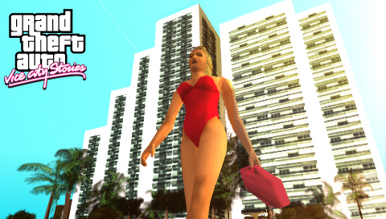
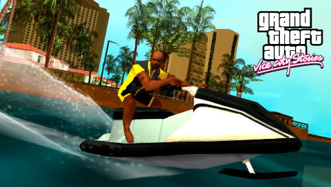
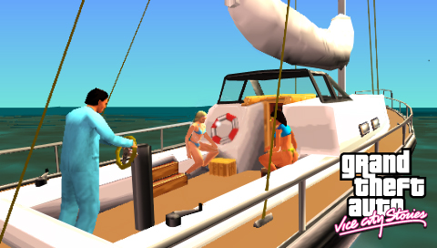
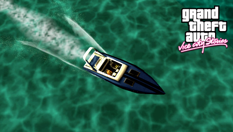

Grand Theft Auto: Vice City Stories

Descripción
Grand Theft Auto: Vice City Stories nos lleva a 1984, donde nos ponemos en la piel de Vic Vance, un exmilitar que intenta sacar adelante a su familia, pero que acaba viéndose envuelto en el peligroso mundo del crimen de Vice City.
Tras una mala decisión, Vic pierde todo lo que tenía y se encuentra en una ciudad dominada por las drogas, la corrupción y las luchas entre organizaciones criminales. A partir de ese momento, tendrá que abrirse camino por los bajos fondos y construir su propio imperio para sobrevivir.
Como en anteriores entregas, podremos explorar libremente la ciudad, realizar misiones y participar en todo tipo de actividades mientras descubrimos una historia llena de traiciones, ambición y conflictos familiares.
Capturas del videojuego




Información del videojuego
| Desarrollador | Plataforma | Fecha de lanzamiento |
|---|---|---|
| Rockstar Leeds, Rockstar North | PS3, PS2, PSP | 31 de octubre de 2006 |